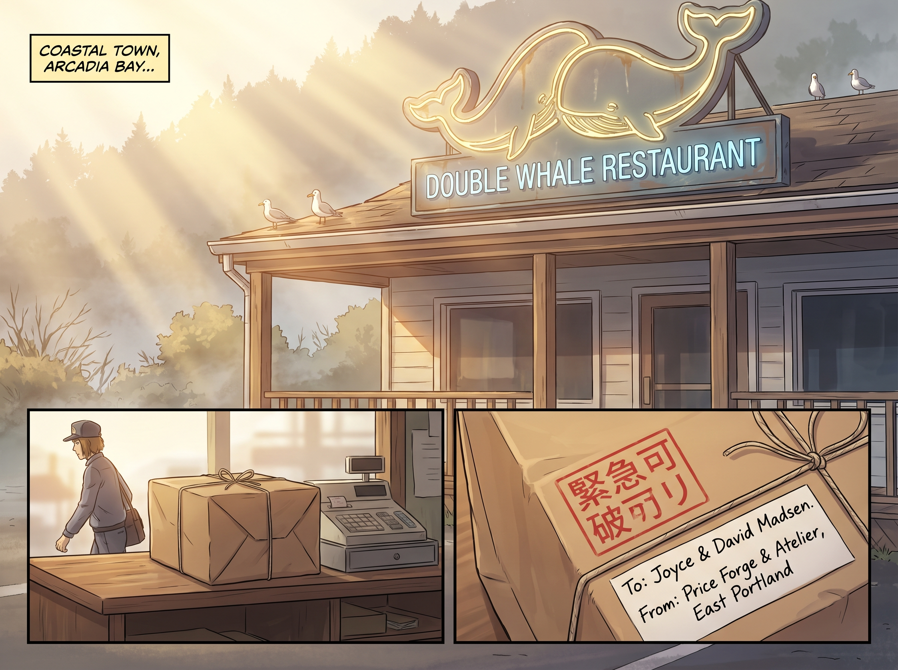
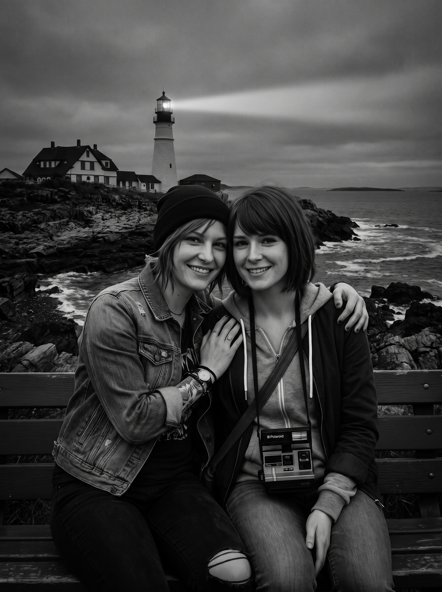

榮譽牆上的合影


半週年特展的收入,讓 Max 和 Chloe 終於添置了一台夢寐以求的大畫幅放大機。那天晚上,四人擠在暗房裡,親手沖洗出了第一張照片——正是阿卡迪亞灣懸崖長椅上,燈塔光柱劃破晚霞,兩人十指緊扣相依的畫面。Chloe 隨後用工坊剩餘的黑胡桃木,親手打磨了一座相框,兩人決定把這份光景寄回阿卡迪亞灣。
週二上午,阿卡迪亞灣的陽光帶著太平洋特有的微鹹海風,輕柔拂過雙鯨餐廳的霓虹招牌。
郵差剛把一個用厚實防水牛皮紙精心打包、貼著「加急精密易碎品」紅色標籤的平整大包裹放在收銀台旁。
收件人一欄用極其工整的鋼筆字寫著:Joyce & David Madsen 收。寄件地址則是波特蘭東區的 Price Forge & Atelier。
一、拆箱時刻
臨近中午的打烊換班時間,Joyce 擦乾淨雙手,解下圍裙,好奇地朝著剛從後廚走出來的 David 招了招手:「David,快來看,是姑娘們從波特蘭寄來的包裹!」
David 踩著軍靴大步走過來,推了推老花鏡,第一反應依然是老兵式的嚴謹:「包裝規格是軍規防潮層,四角加裝了硬質護角,封箱膠帶拉力均勻——看來 Maxine 和 Chloe 的物料打包訓練及格了。」
他從戰術腰帶上抽出一把折刀,極其精準地割開膠帶,生怕傷到裡面的物件。
揭開層層氣泡膜與防塵雪梨紙,一座由北美黑胡桃木手工榫接、外嵌無反射超白博物館級防護玻璃的 16×20 吋精裝大畫幅相框展現在兩人眼前。
相框頂部還用小黃銅夾固定著一張薄薄的手寫信紙,是 Max 娟秀的字跡:
「親愛的 Joyce 媽媽、David:
這座相框是 Chloe 親手用工坊剩餘的優質黑胡桃木銑槽打磨的,木蠟油擦了三遍;
裡面的照片,是我們親手沖洗出的第一張大畫幅銀鹽照片。
我們把在阿卡迪亞灣最想留下的光,洗出來寄給你們。」
Joyce 輕輕拿起相框,當她的目光落在照片上的那一瞬間,呼吸不由自主地停住了。
黑白光影細膩得宛如具有實體質感:阿卡迪亞灣海崖的黑色岩石、遠方燈塔射出的溫暖光柱、晚風中衣角的褶皺、以及長椅上緊緊相依、相視而笑的兩個女孩。Chloe 臉上的叛逆與痛苦早已煙消雲散,只剩下純粹的釋懷與肆意的幸福;而身旁的 Max,眼底滿是前所未有的堅定與溫柔。
「天哪……」Joyce 的手微微顫抖,眼眶在幾秒鐘內迅速泛紅,大顆大顆的淚珠啪嗒啪嗒掉在玻璃面板上。她連忙用紙巾輕輕擦拭乾淨,捂著嘴哽咽道:
「David,你看……Chloe 在笑呢。自從 William 離開後……我已經有多少年,沒見過這孩子笑得這麼安心、這麼乾淨了……」
二、退伍軍人的沉默與陳列
站在一旁的 David 摘下了老花鏡。
這位曾在戰場上出生入死、平時不苟言笑的老兵,此刻盯著照片裡兩人十指緊扣的手、以及 Chloe 眼神裡對未來的篤定,喉結劇烈地上下滾動了幾下。
他深深吸了一口氣,粗糙的大手在工裝褲上擦了又擦,隨後小心翼翼地接過相框,指尖撫過 Chloe 親手倒角的黑胡桃木邊框,聲音低沉沙啞得厲害:
「榫接公差控制得很均勻……這丫頭的手藝,已經比我當年強了。」
他轉過身,擦了擦眼角,隨後像是做出了某項極其重大的決策一樣,環顧整間雙鯨餐廳:
「這張照片不能收在抽屜裡,也不能隨便掛在客廳角落。」
「那你要掛在哪裡?」Joyce 抹著眼淚問。
David 大步走向雙鯨餐廳正中央最顯眼的那面榮譽牆——那裡原本掛著阿卡迪亞灣鎮歷史黑白老照片、以及 David 當年在海軍陸戰隊獲得的嘉獎令複印件。
David 毫不猶豫地取下了一張普通的風景照,從工具箱裡拿出水平儀和衝擊鑽,在牆上打入兩枚高強度黃銅膨脹螺栓。
他雙手將這座巨大的相框穩穩掛上牆面,反覆用水平儀確認了三次,確保角度達到絕對水平。
在餐廳暖黃色的吊燈照射下,這張大畫幅燈塔合影瞬間成為了整間雙鯨餐廳最奪目、最溫暖的視覺中心。
三、雙鯨餐廳的驕傲
五分鐘後,餐廳重新開門迎客。
幾位阿卡迪亞灣的老熟客和漁民推門走進來,一眼就看見了榮譽牆中央的新照片:
「嘿,David!Joyce!那是 Chloe 和 Maxine 吧?老天,這照片拍得太震撼了!這是從哪兒弄來的?」
換作以前,David 或許會含糊其辭或繃著臉轉移話題。
但這一次,這位前海軍陸戰隊老兵挺直了腰板,雙手撐在收銀台上,下巴微揚,用全餐廳都能聽見的洪亮嗓音,極其自豪且平靜地宣布:
「那是我們家姑娘親手拍、親手洗、親手做框寄回來的。」
「她們現在是波特蘭東區最優秀的獨立修復匠人與暗房藝術家——也是彼此最過硬的戰術搭檔。」
Joyce 繫著圍裙,站在一旁端著剛出爐的熱咖啡,看著身邊這位笨拙卻無比真誠的老伴,又看著牆上女兒燦爛的笑臉,笑得眼淚再次漫了出來。
海風吹過阿卡迪亞灣的街道,而在這間小小的餐廳裡,這份跨越了風暴與漫長歲月的守護,終於化作了整個小鎮最驕傲的永恆定格。